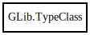

GLib.TypeClass – gobject-2.0 Reference Manual
Packages
gobject-2.0
GLib
TypeClass
add_private
adjust_private_offset
get_instance_private_offset
get_type
peek
peek_parent
TypeClass
Object Hierarchy:

Description:
[
CCode
( free_function =
"g_type_class_unref"
, lower_case_csuffix =
"type_class"
) ]
[
Compact
]
public
class
TypeClass
All known sub-classes:
EnumClass
FlagsClass
ObjectClass
Namespace:
GLib
Package:
gobject-2.0
Content:
Methods:
public
void
add_private
(
size_t
private_size)
public
void
adjust_private_offset
(
ref
int
private_size_or_offset)
public
int
get_instance_private_offset
()
public
Type
get_type
()
public
unowned
TypeInterface
?
peek
(
Type
iface_type)
public
unowned
TypeClass
?
peek_parent
()